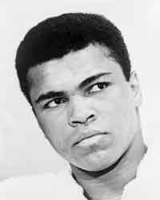

At the time of writing, Muhammad Ali has just been laid to rest.
Muhammad Ali's funeral was an inclusive interfaith event planned in detail by Muhammad himself.
"Muhammad indicated that when his time came, he wanted to use his death as a teaching method for the world. He had grown up in segregation. He never bechame embittered enough to quite or engage in violence. So even in death, Muchammad has something to say."
~ Lonnie Ali
These people spoke at Ali's funeral:
The image of Muhammad Ali is from the New Yor World-Telegram and Sun collection at the Library of Congress. Per the Library of Congress, the image is in the public domain by virtue of being part of a collection donated to the Library. Retrieved June 16, 2016 from the Wikimedia Commons website: https://commons.wikimedia.org/wiki/File:Muhammad_Ali_NYWTS.jpg
Alexander, Harriet, Sabur, Rozina and Akkoc, Raziye. (June 10, 2016). Farewell to Muhammad Ali: Ali decided very young to write his own life story, says Clinton as tributes paid. Retrieved June 16, 2016 from The Telegraph website: http://www.telegraph.co.uk/news/2016/06/10/muhammad-ali-funeral-fans-prepare-for-a-final-goodbye-ahead-of-h/
Collman, Ashley. (June 10, 2016). Widow Lonnie and daughters Maryum and Rasheda deliver eulogies at Muhammad Ali's memorial in front of two ex-wives, nine children and thousands of mourners. Retrieved June 13, 2016 from the MailOnline website: http://www.dailymail.co.uk/news/article-3636023/Widow-Lonnie-daughter-Maryum-deliver-eulogies-Muhammad-Ali-s-memorial-two-ex-wives-nine-children-numerous-grandchildren.html
Jacobs, Alex. (June 11, 2016). Muhammad Ali Eulogized by Native Speakers at Funeral. Retrieved June 13, 2016 from Indian Country Today Media Network website: http://indiancountrytodaymedianetwork.com/2016/06/11/muhammad-ali-eulogized-native-speakers-funeral-164769
{kind=link}